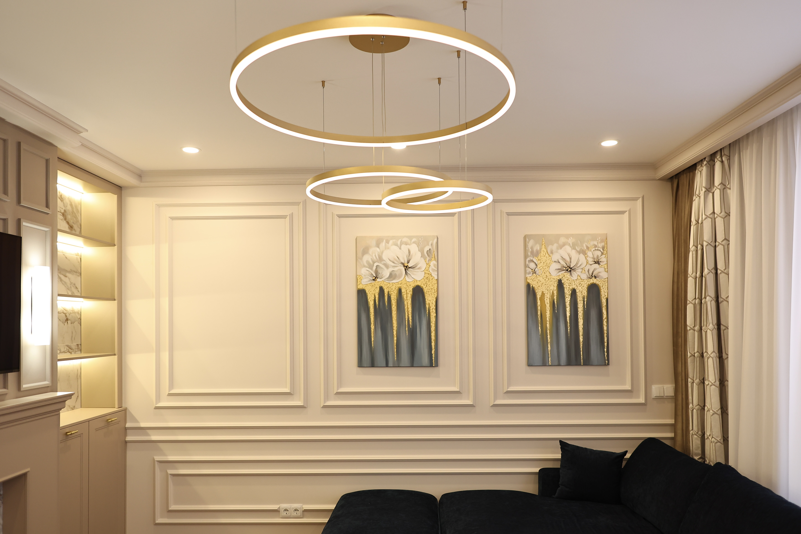
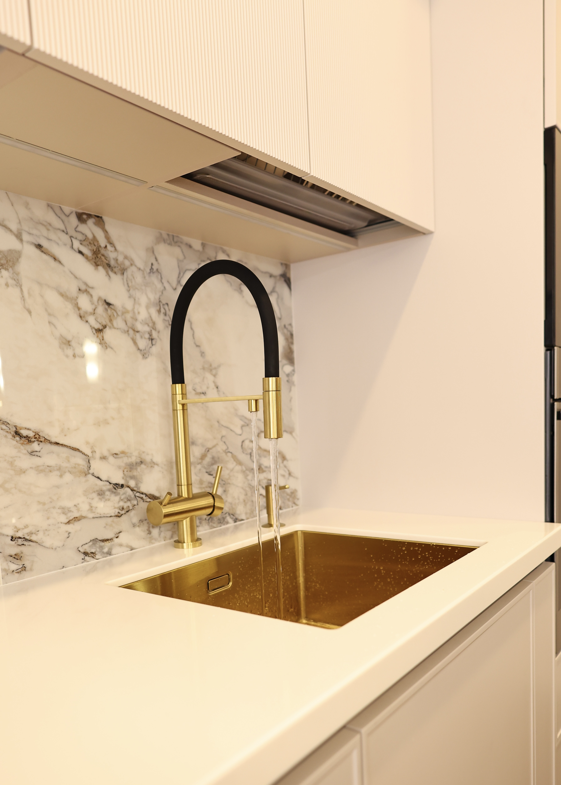
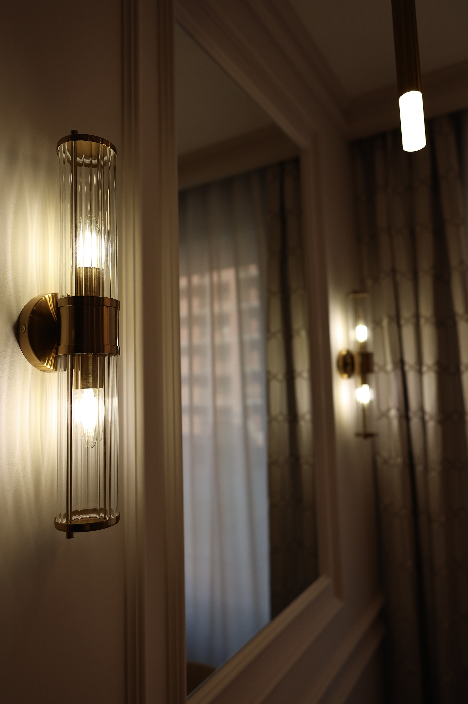
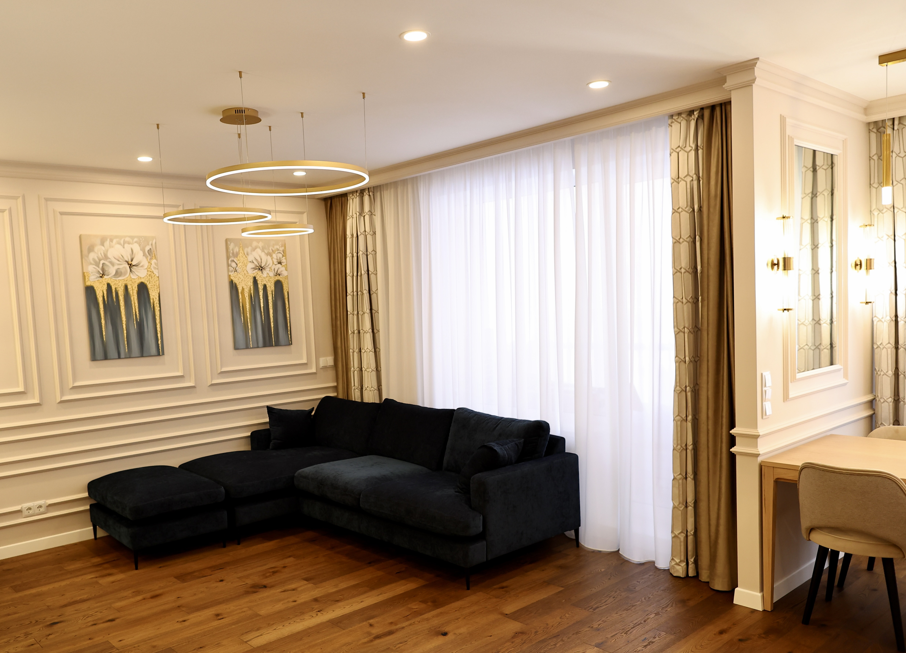
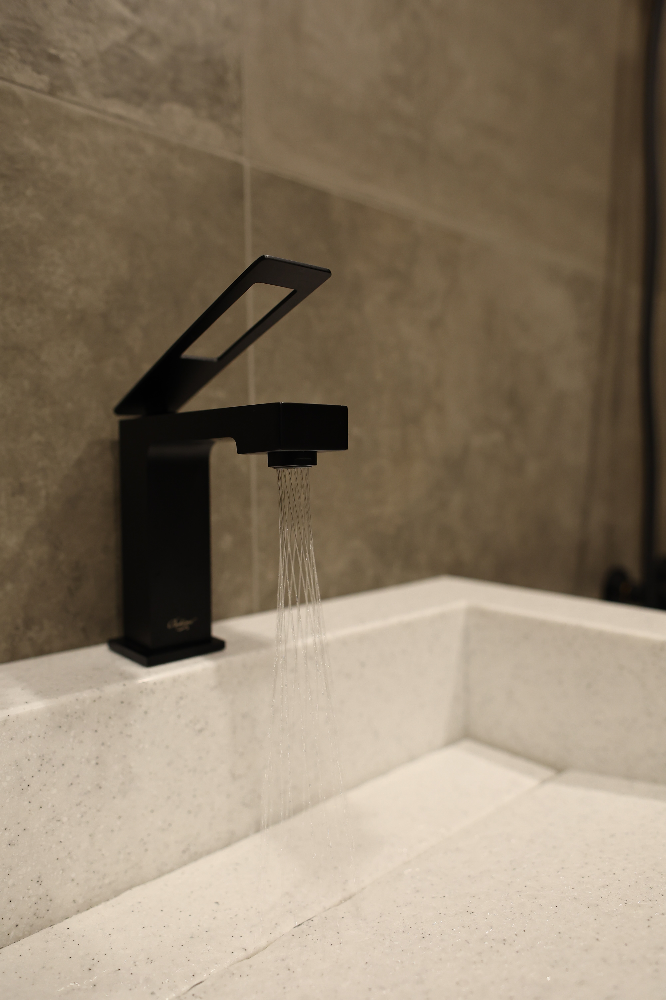

The Challenge
The primary objective of the side extension was to create an open-plan kitchen and dining area, establishing a vibrant central hub for the family. Given the proximity to neighbouring properties, maintaining privacy was a critical aspect of the design. Additionally, the project scope included the installation of a utility room, three new bathrooms, and the full renovation of the remaining spaces within the house.




